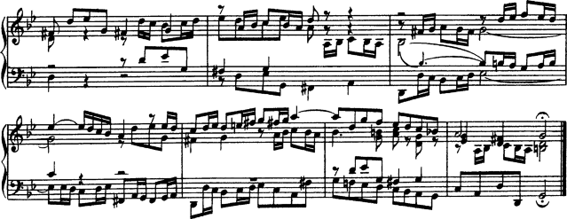

1.6 Comparatif (BWV 861)
Cette annexe présente quatre éditions de référence et deux éditions informatisées des sept dernières mesures de la fugue en sol mineur extraite du Premier livre du clavier bien tempéré de Bach (BWV 861).
Bärenreiter BA5070 (Neue Ausgabe Sämtlicher Werke, Serie V, Band 6.1, 1989) :

Bärenreiter BA5070 (Neue Ausgabe Sämtlicher Werke, Serie V, Band 6.1, 1989), à partir d’une autre source. En plus de différences au niveau des éléments textuels, ce travail montre que, au sein d’une même maison d’édition, les appréciations peuvent être différentes selon le graveur :

Breitkopf & Härtel, édité par Ferruccio Busoni (Wiesbaden, 1894), disponible à la Petrucci Music Library (IMSLP #22081). Les éléments éditoriaux tels que doigtés et articulations en ont été gommés aux fins de comparaison avec les autres éditions :
Bach-Gesellschaft edition (Leipzig, 1866), disponible à la Petrucci Music Library (IMSPL #02221) :

Finale 2008 :

LilyPond, version 2.19.65 :
![[image of music]](../9a/lily-c16047db.png)
Autres langues : English, deutsch, español, magyar, italiano.
About automatic language selection.